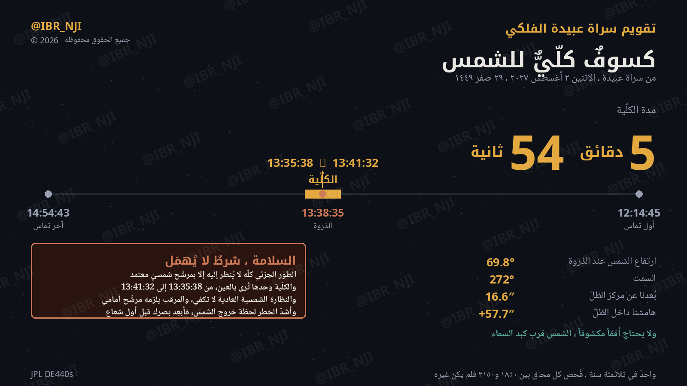
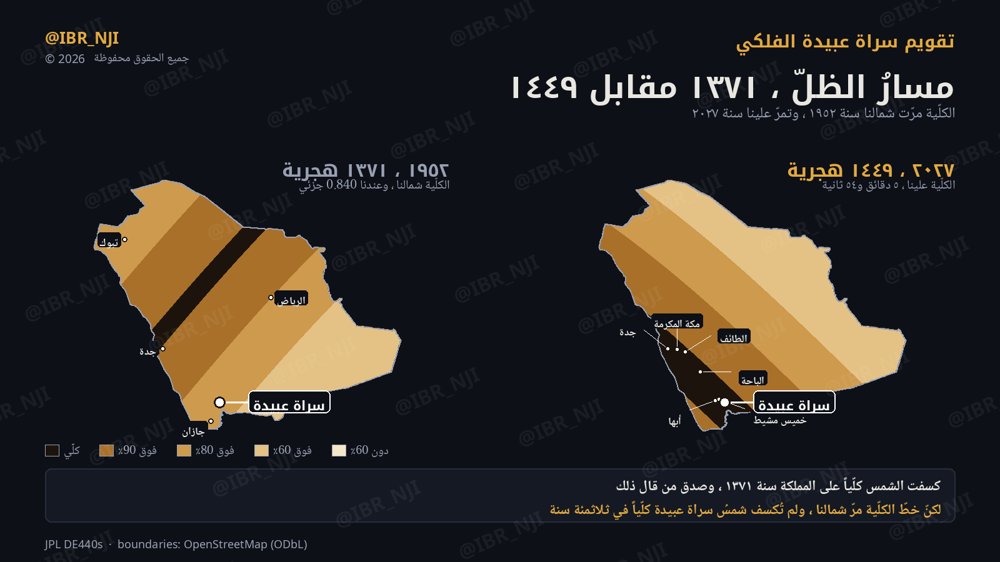
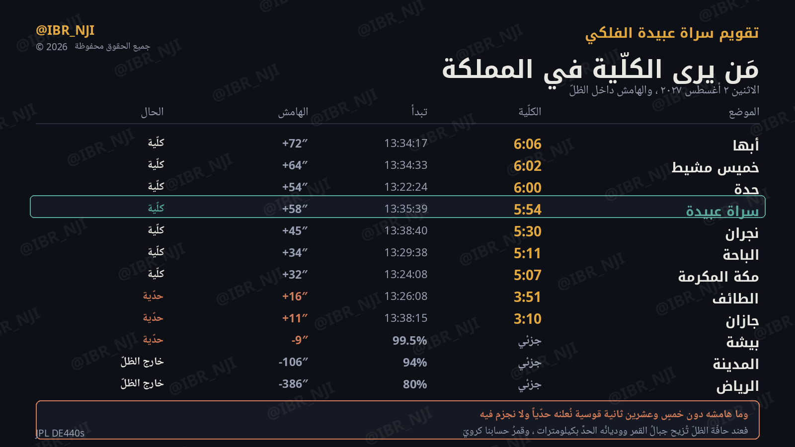

الاثنين 2 أغسطس 2027م · 29 صفر 1449هـ · من سراة عبيدة، الكلّية 5 دقائق و54 ثانية، والشمس قرب كبد السماء فلا يحتاج أفقاً مكشوفاً — يراه من في فناء بيته.

ولا يحتاج أفقاً مكشوفاً — الشمس فوق الرأس تقريباً.
| الموضع | الكلّية أو القدر الجزئي |
|---|---|
| أبها | 6:06 كلّية |
| خميس مشيط | 6:02 كلّية |
| جدة | 6:00 كلّية |
| سراة عبيدة | 5:54 كلّية |
| نجران | 5:30 كلّية |
| الباحة | 5:11 كلّية |
| مكة المكرمة | 5:07 كلّية |
| الطائف | 3:51 كلّية |
| جازان | 3:10 كلّية |
| بيشة | 99.5% جزئي |
| المدينة | 94% جزئي |
| الرياض | 80% جزئي |
وما هامشه دون خمس وعشرين ثانية قوسية يُعلَن حدّياً ولا يُجزَم فيه — فعند حافّة الظلّ تُزيح جبال القمر ووديانه الحدَّ بكيلومترات، وقمر حسابنا كرويّ.
فالدعوى: في ثلاثمئة سنة يبلغها تقويمنا، لم تُكسف شمسُ سراة عبيدة كلّياً إلا مرة واحدة — وهي ٢٠٢٧. وحدُّها معلَن: ما قبل ١٨٤٩ لا يبلغه تقويمنا، فلا نتكلّم فيه. وأعمق ما قبله وبعده جزئيّ فقط: 0.973 سنة ٢٠٤٩، 0.951 سنة ٢٠٥٣، 0.946 سنة ١٩٠٥.

ومن المعلوم أن كسوفاً كلّياً وقع قبل نحو سبع وسبعين سنة، في ١٣٧١ هـ — والتحقيق: صدق. ذاك كسوف ٢٥ فبراير ١٩٥٢ = ٢٩ جمادى الأولى ١٣٧١، ومسحُ الجزيرة شبكياً يُظهر أن خطّ الكلّية عبر المملكة قطرياً من شمالها الشرقي إلى ساحل البحر الأحمر شمال سراة عبيدة.
وقدرُه عندنا يومئذ 0.840 — جزئي لا كلّي (أبها 0.856 · جازان 0.828 · مكة 0.981 · الرياض 0.901). فالكلّية مرّت على غرب المملكة ووسطها وشمالها، ولم تبلغ الجنوب. والقولان لا يتعارضان: المعلوم عن المملكة، وحسابنا عن سراة عبيدة.
| البند | الدرجة |
|---|---|
| أزمنة التماس والكلّية والمدة | صلب — هندسة من JPL DE440s، بعيّنة كل ثانية |
| جدول المدن | محسوب بالطريقة نفسها |
| «واحد في ثلاثمئة سنة» | محسوب، وحدُّه الزمني معلَن (١٨٤٩–٢١٥٠) |
| مسار ١٩٥٢ | محسوب بمسح شبكيّ كل درجتين — تقريبيّ في تحديد الحافّة |
